Le fluor
L’utilisation du dentifrice fluoré est la mesure la plus efficace de prévention des lésions carieuses.
Cette prévention repose sur un brossage 2 fois par jour, pendant 2 minutes, avec un dentifrice dont la teneur en fluor est adaptée à l’âge. Dans certains cas, si le risque carieux de l’enfant et/ou de l’adulte est élevé, le dentiste peut, après un bilan fluoré, prescrire une supplémentation en fluor (bain de bouche, dentifrice fortement dosé) ainsi que des soins préventifs adaptés (scellement de sillons, pose de vernis fluoré…).
Les recommandations d’usage varient selon l’âge, conformément aux préconisations de l’UFSBD et de l’ANSM (ex-Afssaps). N’hésitez pas à en parler lors de votre prochaine consultation.
Le fluor, un allié majeur contre les caries
-
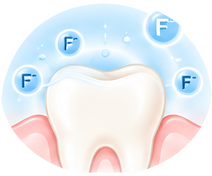
Renforce l’émail
Le fluor s’intègre à l’émail et le rend plus résistant aux attaques acides.
-
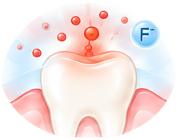
Limite la déminéralisation
Il réduit l’action des acides produits par les bactéries de la plaque dentaire.
-
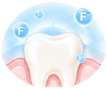
Favorise la reminéralisation
Il aide à réparer les débuts de caries, avant l’apparition d’une cavité.
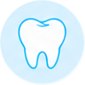
Ce que recommande la HAS
La Haute Autorité de Santé (HAS) recommande l’utilisation quotidienne d’un dentifrice fluoré à une concentration adaptée à l’âge, combinée à un brossage biquotidien (matin et soir), avec une quantité de dentifrice appropriée.
Source : HAS. Stratégie de prévention de la carie dentaire chez l’enfant et l’adulte. Actualisation 2024.
Quelle quantité de dentifrice fluoré ?
Selon les recommandations 2024 de la HAS.
-
De 0 à 3 ans
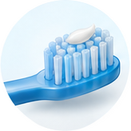
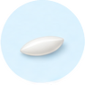
Quantité : une trace (équivalent d’un grain de riz)
Dentifrice : 1 000 ppm de fluor
-
De 3 à 6 ans
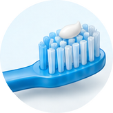
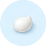
Quantité : un petit pois
Dentifrice : 1 000 ppm de fluor
-
De 6 à 18 ans
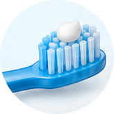
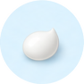
Quantité : un petit pois
Dentifrice : 1 450 ppm de fluor
-
Adulte
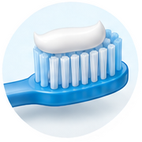
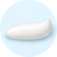
Quantité : une noisette (d’environ 1 à 2 cm)
Dentifrice : 1 450 ppm de fluor
Conseils d’utilisation
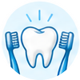
2 brossages par jour : le matin et le soir, pendant 2 minutes.
Ne pas trop rincer : après le brossage, crachez l’excédent de dentifrice et évitez un rinçage abondant pour maintenir l’action du fluor.
Utiliser un dentifrice adapté à l’âge : respectez la concentration en fluor recommandée (1 000 ou 1 450 ppm).
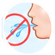
Éviter l’ingestion : surveillez le brossage chez les jeunes enfants afin de limiter l’ingestion de dentifrice.
L’essentiel
- Le fluor est sûr et efficace aux doses recommandées par la HAS.
- Il est adapté à tous les âges, avec une concentration et une quantité de dentifrice spécifiques.
- Il contribue à prévenir les caries et à renforcer les dents.
- Un brossage biquotidien avec un dentifrice fluoré reste la mesure la plus efficace et la plus simple.